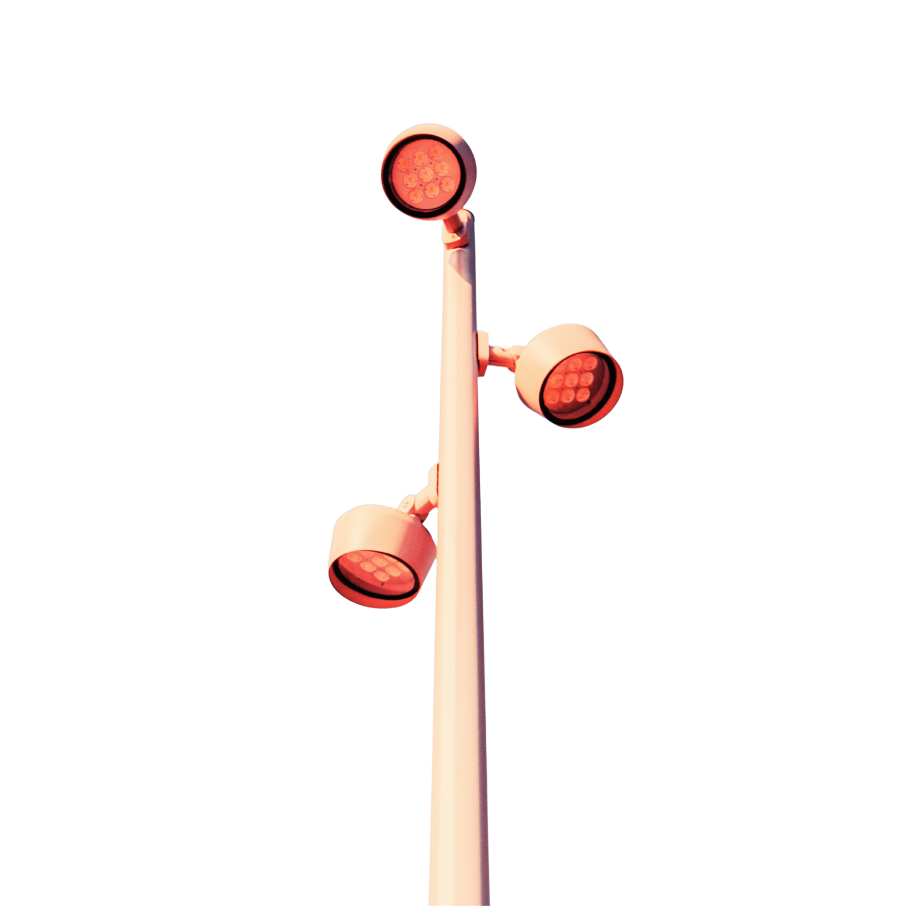
Zukunft braucht Organisation.
Wertebasierte Organisationsberatung in Berlin
Organisation gestalten. Transformation umsetzen. Zukunft verantworten.
Vision und Ansatz
Organisationen prägen Wirtschaft und Gesellschaft.
Sodass Menschen ihre Fähigkeiten entfalten und Unternehmen Verantwortung für Innovation, Demokratie und nachhaltige Entwicklung übernehmen können.

Leistungen
Vier Felder, ein Ziel.
Wir denken Organisationen End-2-End.
Arbeitsfähigkeit und Skalierung im Kontext von Digitalisierung und KI
Viele Unternehmen haben in KI investiert, Piloten gestartet und einzelne Anwendungsfälle erprobt. Im Alltag bleibt davon oft weniger übrig als erhofft. Die Technik steht, doch sie greift nicht in die Abläufe, und es fehlt die Entscheidung, was wirklich skaliert werden soll. Wir setzen bei der Einführung und Wirkung an: Anwendungsfälle, die zur echten Arbeit passen, verankert in bestehenden Prozessen. So begleiten wir den Weg vom Pilot in die Skalierung, bis digitale Lösungen selbstverständlich genutzt werden, Potentiale messbar sind und Effizienz steigt.
- Anwendungsfälle, die zur echten Arbeit passen
- Verankerung in bestehenden Prozessen
- Gemeinsame Prototypisierung und Test von KI-Lösungen
- Optimierung und Modellierung von Abläufen
- Befähigung der Teams im Alltag
- Der Weg vom Pilot in die Skalierung
yorck. in action
Was wir bewegt haben.

Eine Kita neu aufstellen
Von rückläufiger Belegung zu klarem Profil: neues Betreuungsmodell, klare Rollen und messbare Steuerung.
Case lesen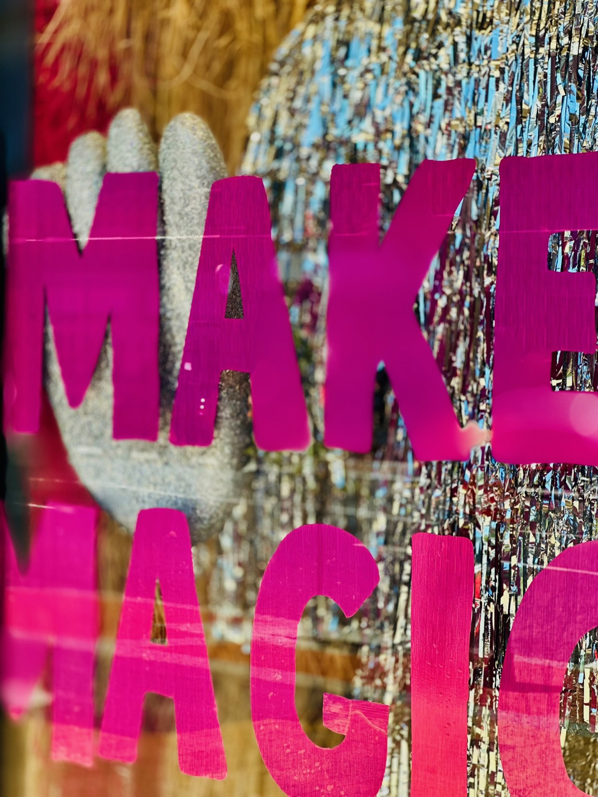
KI vom Pilot in den Alltag bringen
Vom Pilot in die Skalierung: Anwendungsfälle, die zur echten Arbeit passen und im Alltag genutzt werden.
Case lesen
Wissen, das auffindbar wird
Wissen lag verstreut über Medizin, Pflege und Verwaltung. Aus Workshops entstanden ein Zielbild mit klarer Governance und ein Prototyp, der Aufgaben, Prozesse und Vorlagen an einer Stelle bündelt.
Case lesen
Führung begleiten, wo es einsam wird
Ein Sparringspartner auf Augenhöhe, inklusive „rotem Telefon" für Entscheidungen, die nicht warten.
Case lesen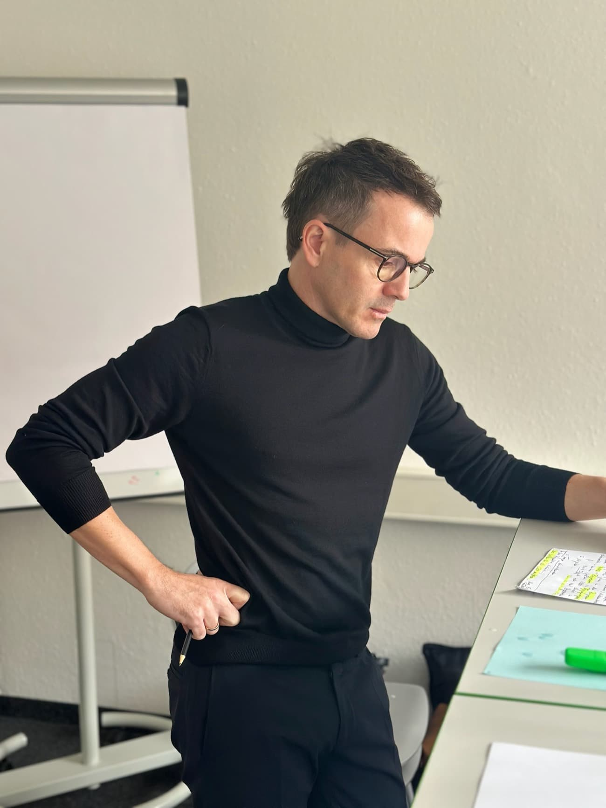
Eine Personalstrategie mit langem Atem
Aus einzelnen Maßnahmen wird eine langfristig ausgerichtete Personalstrategie: Datenanalyse, ein gemeinsames Zielbild mit Vorstand und HR sowie ein tragfähiges Projektsetup über mehrere Jahre.
Case lesen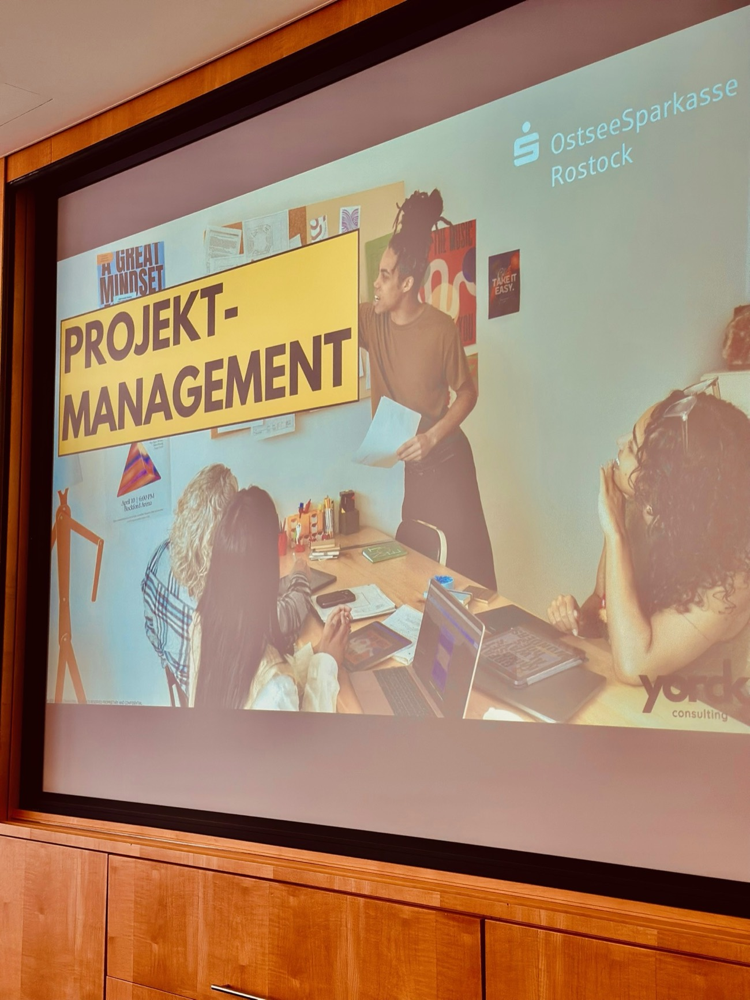
Projektkompetenz für die ganze Organisation bleibt
Zwei aufeinander abgestimmte Trainings, klassisch und agil, bringen die gesamte Organisation auf eine gemeinsame Sprache für Projektarbeit, beginnend bei der Führung.
Case lesen
Organisation, die wieder entscheidet
Klare Rollen, Schnittstellen und Reporting: gewachsene Komplexität wird zu belastbaren Verantwortlichkeiten.
Case lesen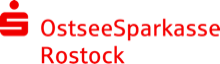
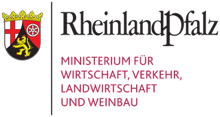
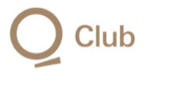
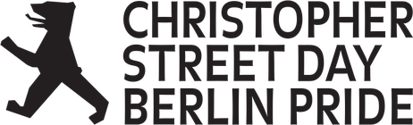
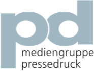
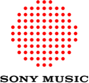
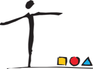
Arbeitsweise
So arbeiten wir.
Kein Standardablauf, sondern ein Weg vom ersten Zuhören bis zur Wirkung, die bleibt.
Als wertebasierte Organisationsberatung begleiten wir Unternehmen in Transformation, Wachstum und Umbruch. Gemeinsam mit unseren Kunden gestalten und implementieren wir Veränderung: langfristig, partnerschaftlich und mit messbarer Wirkung. Dabei verbinden wir strategische Klarheit mit tragfähigen Strukturen, wirksamer Führung und einer Kultur, die Zusammenarbeit und Innovation ermöglicht.
-
Verstehen
Wir hören zu, analysieren und benennen, worum es wirklich geht. Dafür sprechen wir mit den Menschen, die die Organisation im Alltag tragen, nicht nur mit der Führungsebene. So entsteht ein Bild, das über das Offensichtliche hinausgeht.
-
Ausrichten
Wir schaffen Klarheit über Ziel, Struktur und Entscheidungswege. Rollen und Schnittstellen werden greifbar, Prioritäten verbindlich gesetzt. So weiß jede Ebene, woran sie sich orientiert.
-
Befähigen
Wir bringen Menschen und Teams in die Umsetzung, mit den richtigen Werkzeugen und einem Vorgehen, das zur echten Arbeit passt. Führungskräfte und Teams wachsen gemeinsam in ihre neue Rolle hinein.
-
Verankern
Wir sorgen dafür, dass Wirkung bleibt und im Alltag trägt, statt nach dem Projekt zu verblassen. Klare Verantwortlichkeiten und ein realistischer Zeitplan machen Veränderung nachhaltig.
yorck. Insights!
Impulse, die wir teilen.

Kein Angebotsproblem. Ein Zugangsproblem. Warum wir trotzdem auf den Public Sector setzen.
Weiterlesen
Warum angstfreie Organisationen der wahre Innovationsmotor sind
Weiterlesen
Wenn Übernahme nur der Start ist – warum ganzheitliche Integration die Königsdisziplin darstellt
Weiterlesen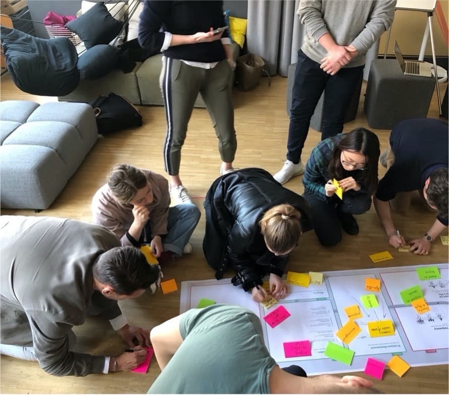
Private Hochschulen unter Druck – warum jetzt strategisches Handeln gefragt ist
Weiterlesen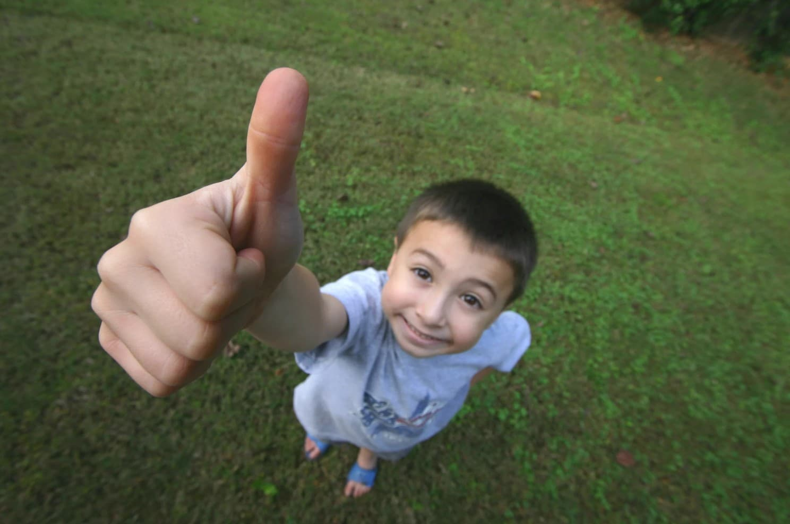
Kitas im Wandel: Warum strategische Neupositionierung kein Luxus, sondern Überlebensstrategie ist
Weiterlesen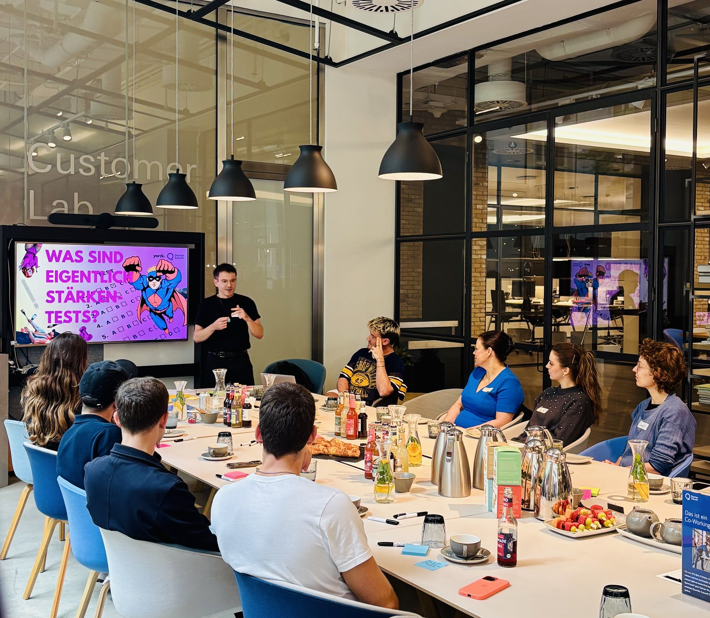
Empowered by Strengths – warum wir diesen Pride Month nicht schweigen 🏳️🌈
Weiterlesen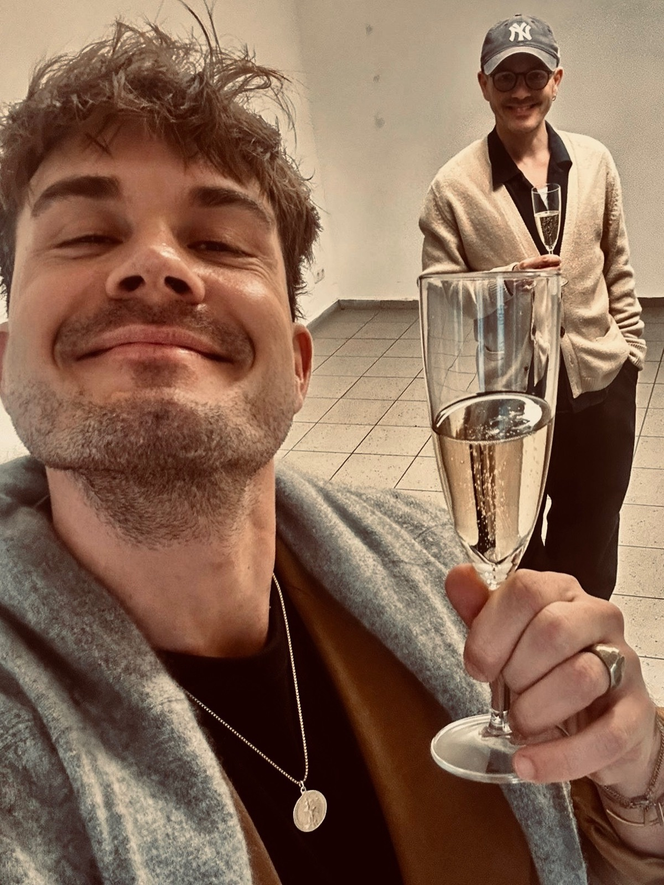
Happy Birthday to us!
Weiterlesen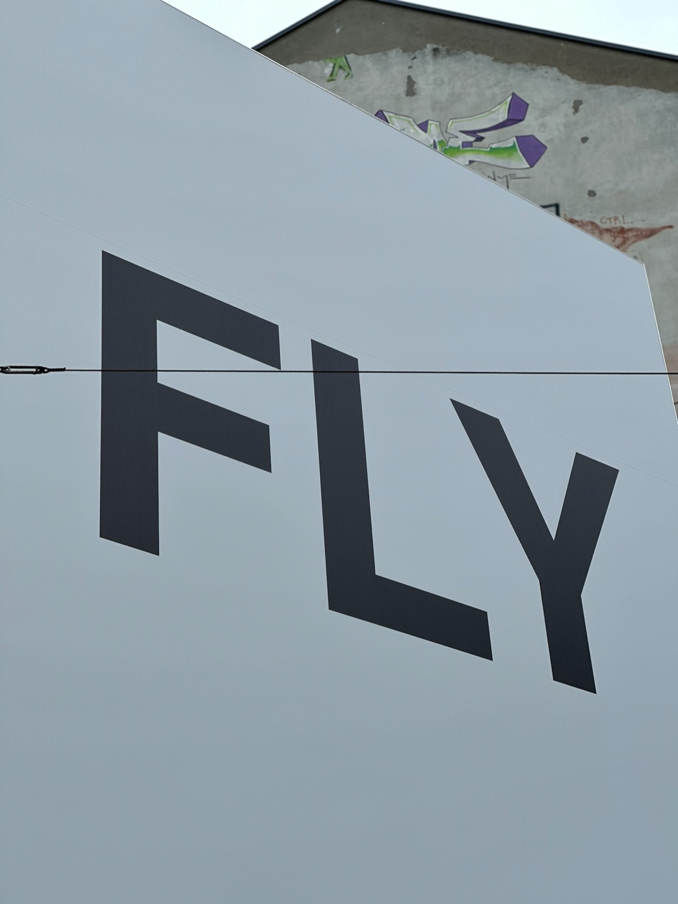
Machen, was man wirklich kann.
Weiterlesen
Vision statt Verwaltung: Warum Deutschland 2025 mehr als einen Koalitionsvertrag braucht
Weiterlesen
Über uns
Yorck.
Dieser Name steht auf unserem Klingelschild. Aber eigentlich ist er mehr: eine kleine Landkarte unserer Geschichte und eine Metapher für das, was wir tun. Unser Firmensitz liegt im Dachgeschoss der Berliner Yorckstraße, mit Blick über die Gleise, die Kreuzberg mit Schöneberg verbinden. Brücken schlagen, genau das tun wir heute in unserer Arbeit: zwischen Strategie und Umsetzung, zwischen Struktur und Kultur, zwischen Menschen, Prozessen und Technologie.
Der Name erinnert an General Ludwig von Yorck von Wartenburg, der 1812 eine mutige, eigenverantwortliche Entscheidung traf, entgegen dem Befehl, aber im Sinne eines größeren Ganzen. Ein Akt von Haltung und Wertekompass. Wir beraten Organisationen, die genau solche Entscheidungen treffen müssen: wenn Märkte sich verändern, wenn Wachstum neue Strukturen verlangt, wenn Transformation Klarheit, Mut und Verantwortung erfordert.
„Yorck" funktioniert überall, in Berlin und in New York, wo die Idee zur Gründung bei einem Spaziergang durch SoHo erstmals laut ausgesprochen wurde. Heute begleiten wir Organisationen dabei, arbeits- und entscheidungsfähig zu bleiben, Strukturen zukunftsfähig auszurichten und nachhaltige Veränderung zu verankern. Darum tragen wir den Namen mit Stolz.
Team
Wer sind wir?

Dr. Christian Lengfeld
Co-Founder & Geschäftsführer
Ich liebe es, Komplexität greifbar zu machen und gemeinsam mit Organisationen Lösungen zu entwickeln, die tragfähig, pragmatisch und zukunftsgerichtet sind. Meine Schwerpunkte liegen im Integrationsmanagement nach Unternehmensübernahmen, der Strategiearbeit und in der Umsetzung und Steuerung von Transformationen. Ob neue Prozesse, Organisationsmodelle oder Change-Projekte: Ich arbeite analytisch, aber nah dran an den Menschen, die es betrifft.

Jan Lengfeld
Co-Founder & Geschäftsführer
Ich begleite Organisationen dabei, sich von innen heraus zu entwickeln, mit Fokus auf strategischer Ausrichtung, Kulturwandel und starker Führung. Transformation entsteht dann, wenn Strukturen und Kultur zusammenspielen und Menschen sich gesehen und gestärkt fühlen. Ich stehe für wirksame Veränderung mit Haltung: strukturiert gedacht, empathisch begleitet, pragmatisch umgesetzt.
Kontakt
Wo Zusammenarbeit möglich ist, entsteht etwas. Wir sind bereit. Sprechen wir darüber.
info@yorck-consulting.comHinweise zur Verarbeitung finden Sie in der Datenschutzerklärung.